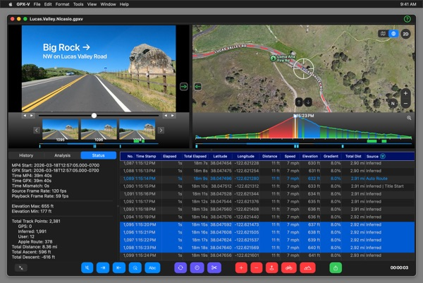
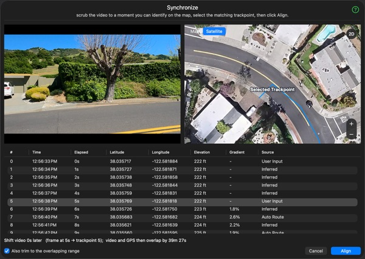
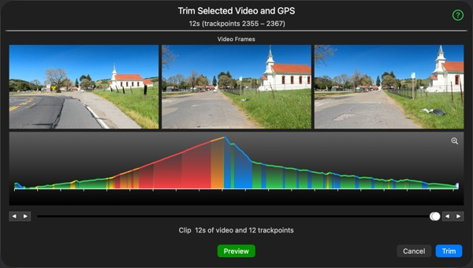
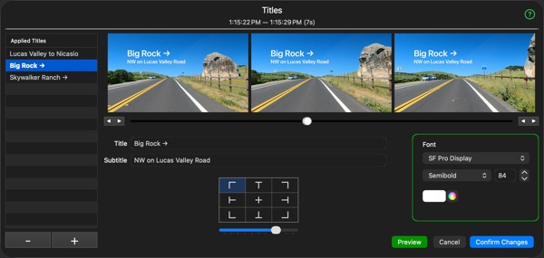
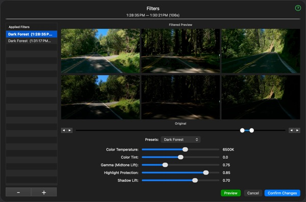
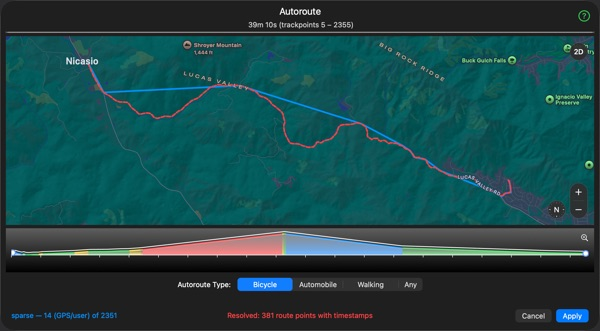
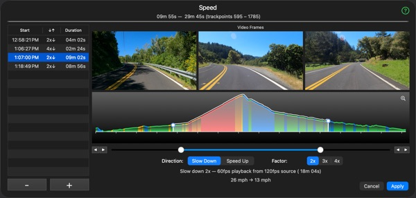
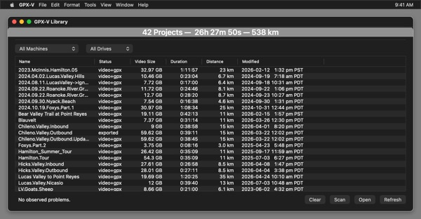

Click any item below to get an interactive explanation of that feature.
Go Pro Video? Strava GPX file? GPX-V is your one-stop solution for synchronized files for upload to Kinomap, Rouvy and others.
Click any item below to get an interactive explanation of that feature.







